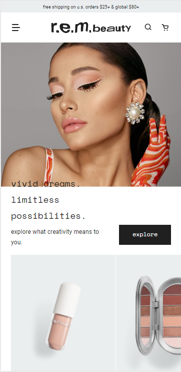
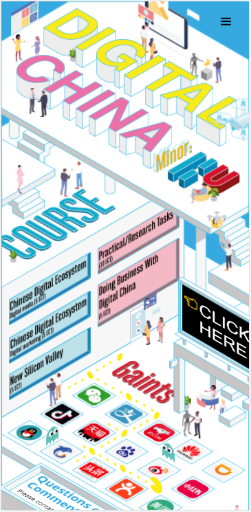
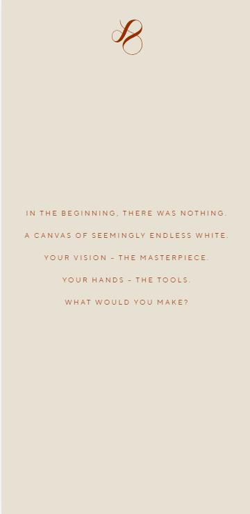
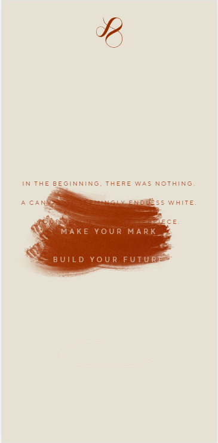
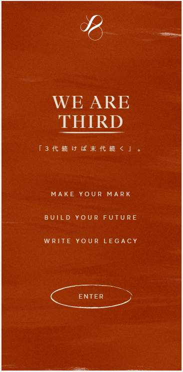

Rule of Three
r.e.m. beauty
www.rembeauty.com "The r.e.m. beauty homepage is a nice example of the Rule of Three. This design theory says that if you draw two imaginary horizontal lines to divide the design in to thirds and then further divide the design vertically by drawing two vertical lines, you end up with a grid similar to tic tac toe. Research has shown that people tend to look at the four places where the lines intersect, following a typical pattern. First we tend to look at intersection of lines to the upper left of center. Then we move downward to the lower left, across to the upper right, and finally to the lower right. Here, Ariana Grande's eyes are the main focal point, located optimally near the upper left of center. The dramatic makeup on her eyes form a "whoosh" shape that both points up toward the name of the brand, but also downward toward the lower left to discover the message that begins on her shoulder but then enters a clean white space. The eyes are thus drawn downward to see the products that match what Ariana is wearing, and back up to the right. There we encounter the call to action, a large black button that says, "explore." The button is surrounded by contrasting empty white space. We won't fail to notice it."
PARC: Proximity
Digital China
www.digitalchina.university "Digital China shows how proximity can be used to organize text and images that at are like a drawing by Escher with stair and walls and writing that often changes direction and orientation. "Digital China" and "minor" refers to a series of courses that applied science majors can take to minor in Chinese digital technology. In close proximity large monitors and hovering drones as well as students scattered throughout. The center portion of the design presents the courses in the program. It isn't shown in this image, but if you click any of the buttons, a description of the corresponding course will appear on the marquee. The lower section of the design is a grid of icons for well-known chinese apps. There is an image of pacman and some ghosts floating along a dotted path on the grid. The design is colorful and fun, and full of interesting things to look at. It tells a story as the eyes travel from the title down to contact information at the bottom."
PARC: Contrast
Third by Kenjiro
www.thirdbykenjiro.com/en   "Third by Kinjiro is a fascinating example of contrast in design. It creates drama as the contrasting colors reveal a story meant to draw the viewer in. The text in the center asks, "What would you make?" You discover that dragging the mouse creates a wide brush stroke of red paint across the page, reavealing a hidden message underneath. Suddenly, animation fills the page with broad brush strokes of vibrant red. Now you are able to read the new message in brightly contrasting white font. "Make your mark. Build your future. Enter."